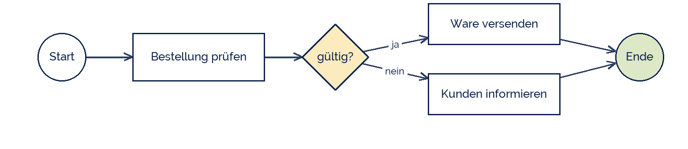

IndigoBunting
IndigoBunting
Good morning!
Nur das Schöne wird die Welt retten!
Fjodor Dostojewski
Nicht verzagen, Doc Alvers fragen!
Informatik — Grundkurs 12
BPMN
Business Process Model and Notation — der internationale Standard
Nicht verzagen, Doc Alvers fragen!
Kapitel 01
Die Grundelemente
Vier Formen genügen für den Anfang
Nicht verzagen, Doc Alvers fragen!
Was BPMN zeichnet
| Element | Form | bedeutet |
|---|---|---|
| Ereignis | Kreis | Start, Zwischenereignis oder Ende |
| Aktivität | abgerundetes Rechteck | eine Aufgabe (Task) |
| Gateway | Raute | Verzweigung oder Zusammenführung |
| Sequenzfluss | durchgezogener Pfeil | die Reihenfolge |
| Pool und Lane | Rahmen und Bahnen | wer ist beteiligt, wer macht was |
Der Startkreis hat einen dünnen Rand, der Endkreis einen dicken — daran erkennt man sie
Pools trennen Beteiligte, die nur Nachrichten austauschen. Lanes trennen Rollen innerhalb eines Pools
Nicht verzagen, Doc Alvers fragen!
Derselbe Prozess in BPMN
Das exklusive Gateway (Raute mit X) entspricht dem XOR der eEPK
Anders als die eEPK braucht BPMN kein Ereignis zwischen zwei Aufgaben

Nicht verzagen, Doc Alvers fragen!
Kapitel 02
Gateways
Die Entscheidungen im Ablauf
Nicht verzagen, Doc Alvers fragen!
Die drei Gateways, die ihr braucht
| Gateway | Zeichen | bedeutet |
|---|---|---|
| exklusiv (XOR) | Raute mit X | genau ein Weg |
| parallel (AND) | Raute mit Plus | alle Wege gleichzeitig |
| inklusiv (OR) | Raute mit Kreis | einer oder mehrere |
Am exklusiven Gateway stehen die Bedingungen an den ausgehenden Pfeilen
Am parallelen Gateway steht keine Bedingung — es laufen immer alle Zweige
Ein Split braucht in der Regel ein passendes Merge mit demselben Typ
Nicht verzagen, Doc Alvers fragen!
Pools, Lanes und Nachrichten
Ein Pool ist ein Beteiligter — etwa „Unternehmen“ und „Kunde“
Innerhalb eines Pools trennen Lanes die Rollen: Vertrieb, Lager, Buchhaltung
Der Sequenzfluss bleibt innerhalb eines Pools
Zwischen Pools läuft nur der Nachrichtenfluss — gestrichelter Pfeil
Das ist die stärkste Eigenschaft von BPMN: wer mit wem wird sichtbar
Nicht verzagen, Doc Alvers fragen!
Kapitel 03
eEPK und BPMN
Zwei Notationen im Vergleich
Nicht verzagen, Doc Alvers fragen!
Der Vergleich
| eEPK | BPMN | |
|---|---|---|
| Herkunft | Saarbrücken 1992, mit SAP | OMG-Standard, heute 2.0 |
| Verbreitung | deutschsprachiger Raum | international |
| Ereignisse | zwingend im Wechsel | nur wo sie gebraucht werden |
| Beteiligte | als Organisationseinheit daneben | als Pool und Lane im Diagramm |
| Ausführbarkeit | nicht vorgesehen | direkt in Prozess-Engines ausführbar |
| Umfang | wenige Elemente | über hundert Elemente |
Für den Einstieg ist die eEPK einfacher, für die Praxis ist BPMN mächtiger
Die letzte Zeile ist auch ein Nachteil: kaum jemand kennt alle BPMN-Elemente
Nicht verzagen, Doc Alvers fragen!
BPMN kann alles, was die eEPK kann — und zusätzlich zeigen, wer mit wem Nachrichten austauscht.
Merksatz
Nicht verzagen, Doc Alvers fragen!
Fun Facts: BPMN
BPMN entstand 2004, seit 2011 gilt die Fassung 2.0
Gepflegt wird der Standard von der Object Management Group, die auch UML betreut
BPMN-Modelle lassen sich als XML speichern und von Software direkt ausführen
Der Standard kennt über 100 Symbole — die meisten Modelle nutzen keine zehn davon
Deshalb gibt es Empfehlungen für eine Kernmenge, mit der man 80 % aller Fälle abdeckt
Nicht verzagen, Doc Alvers fragen!
Eure Aufgabe: derselbe Prozess in BPMN
Modelliert euren Prozess aus der letzten Stunde in BPMN — mit bpmn.io oder draw.io
Mindestens ein exklusives Gateway mit Bedingungen an den Pfeilen
Mindestens zwei Lanes — also zwei Rollen
Wenn ein Externer beteiligt ist: zweiter Pool mit Nachrichtenfluss
Vergleicht beide Modelle: Was sieht man in BPMN, was in der eEPK nicht?
Nicht verzagen, Doc Alvers fragen!